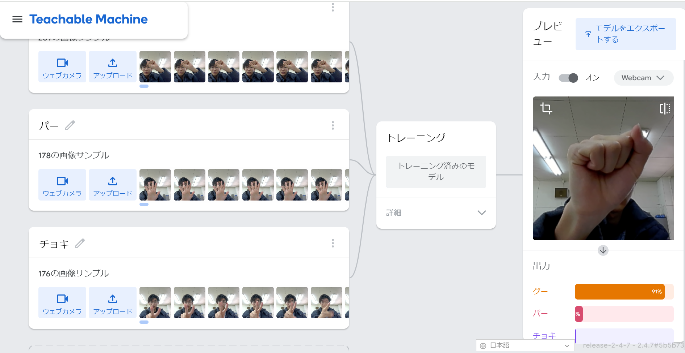
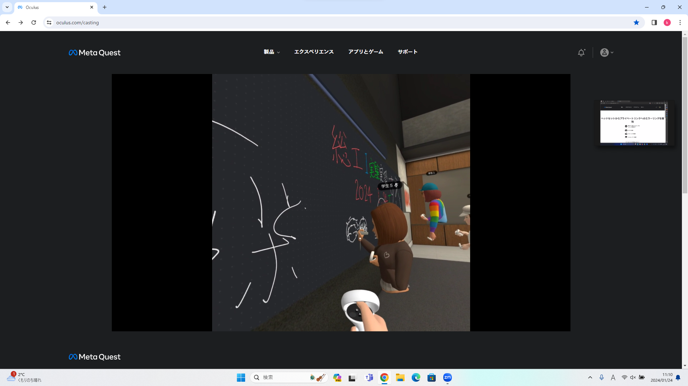

第2週目
2-1 １週目のレポートをHTMLで作る
１週目のレポート
1.内容
自分のホームページを作成したとき使用したプログラムを変更してレポートを作成した．HTMLの中身を変更したりファイルを追加したりしてレポートを作成した．
2.感想
初めてホームページ形式でレポートを作成したため新鮮だった．HTMLのプログラムをここまで長く触ったことがなかったがうまくいってよかった．
2-2 機械学習体験

1.内容
”TeachableModel”を使って画像認識ができるようにした．それによりグーとチョキとパーを見分けれるものを作った．
2.感想
150枚ほどの写真を使って画像認識をしていたがチョキとパーを見分けることが少しあいまいだった．150枚でも多く感じるのにそれ以上の数の写真が必要だと知って驚いた．
2-3 VR（バーチャルリアリティー：Virtual Reality）会議室の体験

1.内容
VRゴーグルを使用してVR空間でデスクに座ったりホワイトボードに文字を書いたりした．
2.感想
初めてVRゴーグルを使ったが予想以上に楽しいものだった．自分の手や動きがすぐに反映されていてリアルとほぼ変わらなかった．自分はゲームなどで酔わないタイプだったがVRゴーグル
を付けると少し酔ってしまった．